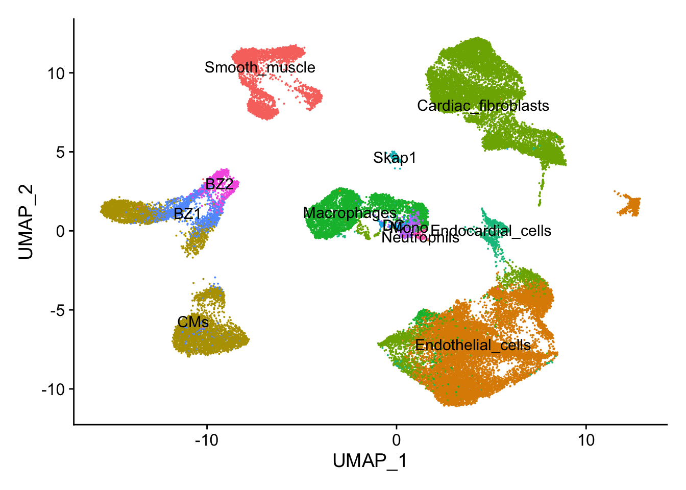
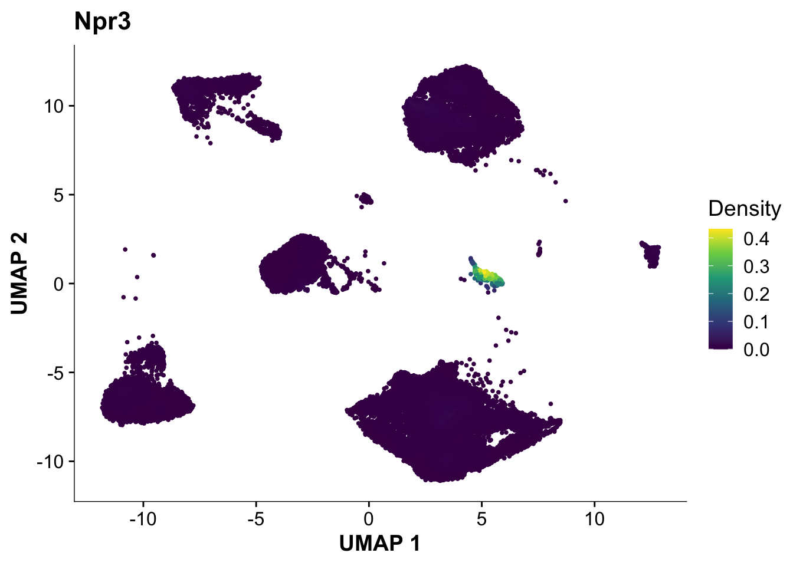
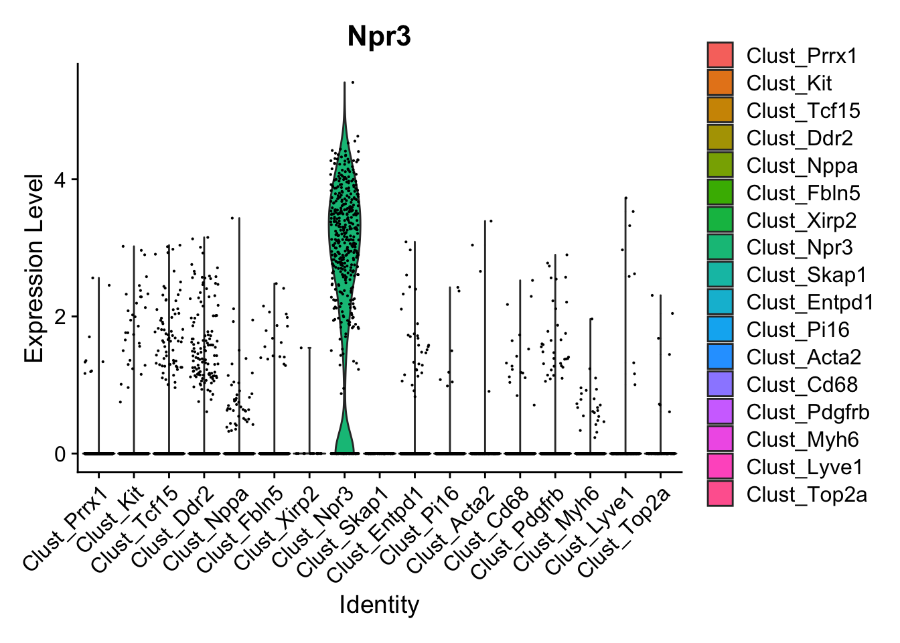
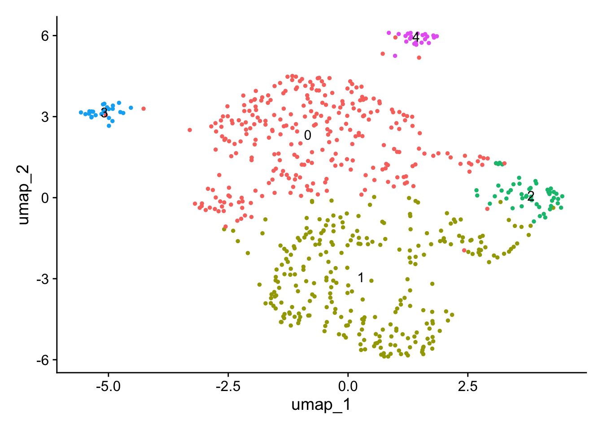
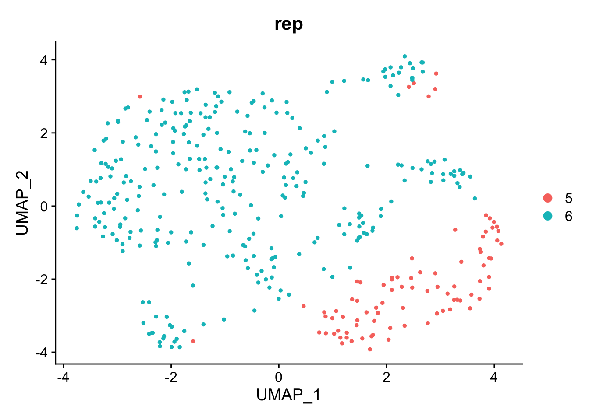
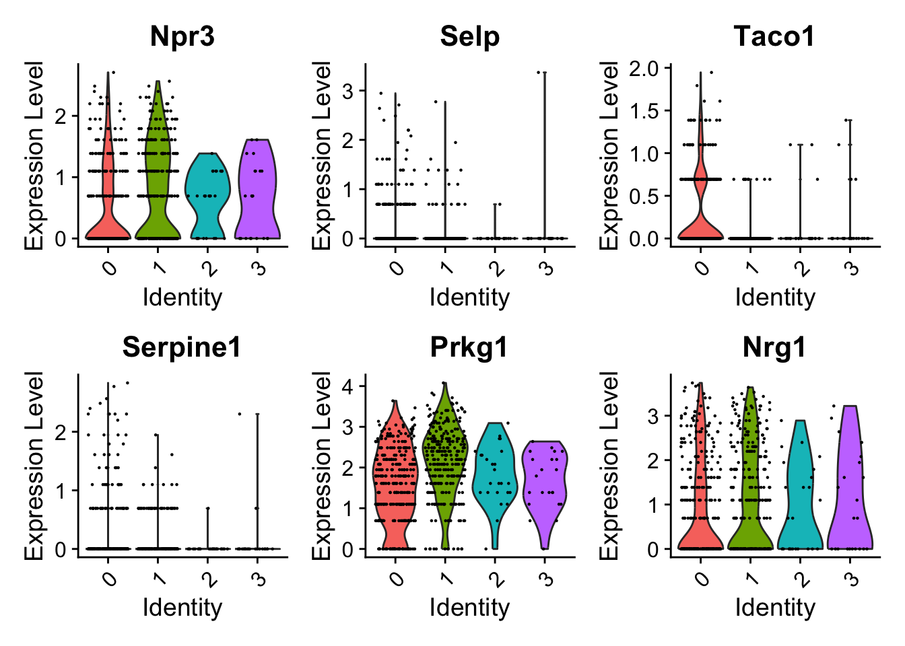
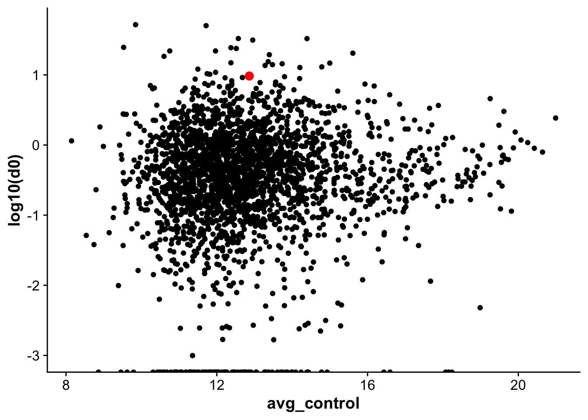
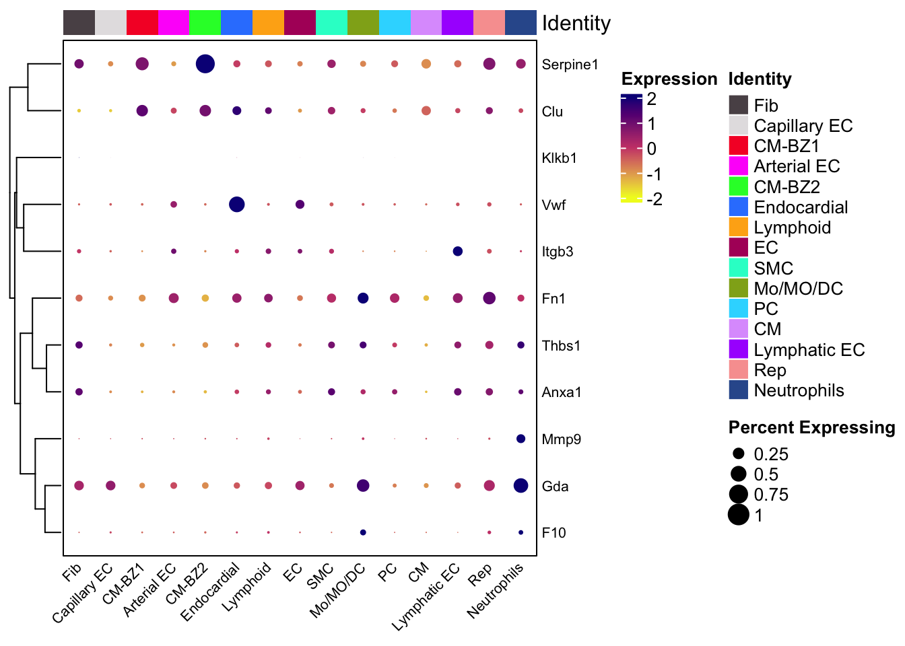

Last updated: 2023-06-29
Checks: 6 1
Knit directory: mi_spatialomics/
This reproducible R Markdown analysis was created with workflowr (version 1.7.0). The Checks tab describes the reproducibility checks that were applied when the results were created. The Past versions tab lists the development history.
The R Markdown file has unstaged changes. To know which version of
the R Markdown file created these results, you’ll want to first commit
it to the Git repo. If you’re still working on the analysis, you can
ignore this warning. When you’re finished, you can run
wflow_publish to commit the R Markdown file and build the
HTML.
Great job! The global environment was empty. Objects defined in the global environment can affect the analysis in your R Markdown file in unknown ways. For reproduciblity it’s best to always run the code in an empty environment.
The command set.seed(20230612) was run prior to running
the code in the R Markdown file. Setting a seed ensures that any results
that rely on randomness, e.g. subsampling or permutations, are
reproducible.
Great job! Recording the operating system, R version, and package versions is critical for reproducibility.
Nice! There were no cached chunks for this analysis, so you can be confident that you successfully produced the results during this run.
Great job! Using relative paths to the files within your workflowr project makes it easier to run your code on other machines.
Great! You are using Git for version control. Tracking code development and connecting the code version to the results is critical for reproducibility.
The results in this page were generated with repository version 430aac1. See the Past versions tab to see a history of the changes made to the R Markdown and HTML files.
Note that you need to be careful to ensure that all relevant files for
the analysis have been committed to Git prior to generating the results
(you can use wflow_publish or
wflow_git_commit). workflowr only checks the R Markdown
file, but you know if there are other scripts or data files that it
depends on. Below is the status of the Git repository when the results
were generated:
Ignored files:
Ignored: .DS_Store
Ignored: .Rhistory
Ignored: .Rproj.user/
Ignored: analysis/.DS_Store
Ignored: data/.DS_Store
Ignored: data/.Rapp.history
Ignored: data/140623.calcagno_et_al.seurat_object.rds
Ignored: renv/.DS_Store
Ignored: renv/library/
Ignored: renv/staging/
Untracked files:
Untracked: analysis/figures.figure_5.Rmd
Untracked: analysis/figures.supplementary_figure_X.proteomics_qc.Rmd
Untracked: code/functions.R
Untracked: figures/Supplementary_figure_X.proteomics.eps
Untracked: figures/Supplementary_figure_X.proteomics.png
Untracked: omnipathr-log/
Untracked: output/limma.full_statistics.tsv
Untracked: output/limma.mi_iz_specific_proteins.tsv
Untracked: output/proteomics.pathway_results.MIiz_MIremote.tsv
Untracked: output/proteomics.pca_res.rds
Untracked: output/proteomics.protein_missing_stats.tsv
Untracked: output/proteomics.snRNAseq_comp.tsv
Untracked: output/proteomics.vsn_norm_proteins.tsv
Untracked: references/
Unstaged changes:
Modified: analysis/data_analysis.Rmd
Modified: analysis/figures.supplementary_Figure_3.Rmd
Modified: analysis/proteomics.bulk_de_analysis.Rmd
Modified: analysis/proteomics.filter_proteomic_data.Rmd
Modified: analysis/proteomics.pathway_enrichment_analysis.Rmd
Modified: analysis/proteomics.scRNAseq_comparison.Rmd
Deleted: code/params_R.R
Modified: figures/Supplementary_figure_3.eps
Modified: figures/Supplementary_figure_3.png
Modified: output/mi_iz_specific_proteins.tsv
Modified: renv.lock
Note that any generated files, e.g. HTML, png, CSS, etc., are not included in this status report because it is ok for generated content to have uncommitted changes.
These are the previous versions of the repository in which changes were
made to the R Markdown
(analysis/proteomics.scRNAseq_comparison.Rmd) and HTML
(docs/proteomics.scRNAseq_comparison.html) files. If you’ve
configured a remote Git repository (see ?wflow_git_remote),
click on the hyperlinks in the table below to view the files as they
were in that past version.
| File | Version | Author | Date | Message |
|---|---|---|---|---|
| html | c1395e6 | FloWuenne | 2023-06-20 | Build site. |
| Rmd | 236130c | FloWuenne | 2023-06-20 | Updating proteomic analysis. |
| html | 236130c | FloWuenne | 2023-06-20 | Updating proteomic analysis. |
We reprocessed the data from Calcagno et al, using the original cell-type annotations from the paper and will load this dataset as a seurat object.
## Load reprocessed Calcagno et al seurat object
calcagno_et_al <- readRDS("./data/140623.calcagno_et_al.seurat_object.rds")## Get only control cells for marker calculation
calcagno_et_al_d0 <- subset(calcagno_et_al,time == "d0")
calcagno_et_al_d1 <- subset(calcagno_et_al,time == "d1")Let’s check the UMAP embedding from our reprocessed object.
## UMAP plot
DimPlot(calcagno_et_al,label = TRUE) + theme(legend.position = "none")
Next, let’s quickly verify, that Endocardial cells are expressing the proper markers before we compare them to our proteomic data.
plot_density(calcagno_et_al_d0, features = "Npr3")
VlnPlot(calcagno_et_al_d0, features = "Npr3")
Expression of the endocardial specific marker Npr3 in this dataset fits with the original authors annotation, suggesting that we can use these endocardial single-cell signature to identify endocardial specific genes in our proteomics data.
We will use the snRNAseq data to identify proteins likely differentially expressed in endocardial cells. For this, we will first identify genes specifically expressed in endocardial cells.
endocard_d1 <- subset(calcagno_et_al, cell_type == "Endocardial_cells" & time == "d1")endocard_d1 <- SCTransform(endocard_d1)Calculating cell attributes from input UMI matrix: log_umiVariance stabilizing transformation of count matrix of size 9652 by 389Model formula is y ~ log_umiGet Negative Binomial regression parameters per geneUsing 2000 genes, 389 cells
|
| | 0%
|
|================== | 25%
|
|=================================== | 50%
|
|==================================================== | 75%
|
|======================================================================| 100%Found 88 outliers - those will be ignored in fitting/regularization stepSecond step: Get residuals using fitted parameters for 9652 genes
|
| | 0%
|
|==== | 5%
|
|======= | 10%
|
|========== | 15%
|
|============== | 20%
|
|================== | 25%
|
|===================== | 30%
|
|======================== | 35%
|
|============================ | 40%
|
|================================ | 45%
|
|=================================== | 50%
|
|====================================== | 55%
|
|========================================== | 60%
|
|============================================== | 65%
|
|================================================= | 70%
|
|==================================================== | 75%
|
|======================================================== | 80%
|
|============================================================ | 85%
|
|=============================================================== | 90%
|
|================================================================== | 95%
|
|======================================================================| 100%Computing corrected count matrix for 9652 genes
|
| | 0%
|
|==== | 5%
|
|======= | 10%
|
|========== | 15%
|
|============== | 20%
|
|================== | 25%
|
|===================== | 30%
|
|======================== | 35%
|
|============================ | 40%
|
|================================ | 45%
|
|=================================== | 50%
|
|====================================== | 55%
|
|========================================== | 60%
|
|============================================== | 65%
|
|================================================= | 70%
|
|==================================================== | 75%
|
|======================================================== | 80%
|
|============================================================ | 85%
|
|=============================================================== | 90%
|
|================================================================== | 95%
|
|======================================================================| 100%Calculating gene attributesWall clock passed: Time difference of 3.287078 secsDetermine variable featuresPlace corrected count matrix in counts slotCentering data matrixSet default assay to SCTendocard_d1 <- RunPCA(endocard_d1, verbose = FALSE)
endocard_d1 <- RunUMAP(endocard_d1, dims = 1:10, verbose = FALSE)Warning: The default method for RunUMAP has changed from calling Python UMAP via reticulate to the R-native UWOT using the cosine metric
To use Python UMAP via reticulate, set umap.method to 'umap-learn' and metric to 'correlation'
This message will be shown once per sessionendocard_d1 <- FindNeighbors(endocard_d1, dims = 1:10, verbose = FALSE)
endocard_d1 <- FindClusters(endocard_d1, verbose = FALSE, resolution = 0.2)DimPlot(endocard_d1, label = TRUE) + NoLegend()
DimPlot(endocard_d1, label = FALSE, group.by = "rep")
endo_diff_marker <- FindAllMarkers(endocard_d1, only.pos = TRUE)Calculating cluster 0Calculating cluster 1Calculating cluster 2Calculating cluster 3endo_diff_marker_top <- endo_diff_marker %>%
subset(p_val_adj < 0.05)VlnPlot(endocard_d1, features = c("Selp","Taco1","Serpine1","Prkg1","Nrg1"))
Let’s load the proteomic data now:
limma_res <- fread("./output/limma.full_statistics.tsv")
## Extract statistics for different contrasts
miiz_vs_control_signature <- subset(limma_res,analysis == "MI_IZ_vs_control")
miiz_vs_remote_signature <- subset(limma_res,analysis == "MI_IZ_vs_MI_remote")
## Load the normalized protein matrix as well
protein_mat <- fread(file = "./output/proteomics.vsn_norm_proteins.tsv")
protein_mat_avg <- protein_mat %>%
mutate(avg_control=rowMeans(.[ , c("control_r1","control_r2","control_r3")], na.rm=TRUE)) %>%
mutate(avg_MI_IZ=rowMeans(.[ , c("MI_IZ_r1","MI_IZ_r2","MI_IZ_r3","MI_IZ_r4")], na.rm=TRUE)) %>%
mutate(avg_MI_remote=rowMeans(.[ , c("MI_remote_r1","MI_remote_r2","MI_remote_r3","MI_remote_r4")], na.rm=TRUE)) %>%
dplyr::select(gene,avg_control,avg_MI_IZ,avg_MI_remote)## Calculate pseudobulk expression profiles for endocardial cells
endocard_seurat <- subset(calcagno_et_al, cell_type == "Endocardial_cells")
sn_endo_bulk <- AverageExpression(endocard_seurat, group.by = c("time"))
sn_endo_bulk_df <- as.data.frame(sn_endo_bulk$RNA)
sn_endo_bulk_df$gene <- rownames(sn_endo_bulk_df)## Merge average protein expression values with average RNA expression
rna_protein_avg <- left_join(protein_mat_avg,sn_endo_bulk_df, by = "gene") %>%
drop_na()
corrplot_rna_protein <- ggplot(rna_protein_avg,aes(avg_control,log10(d0), label = gene)) +
geom_point() +
geom_point(data = subset(rna_protein_avg, gene == "Vwf"),color = "red", size =3)
corrplot_rna_protein
endo_marker <- FindMarkers(calcagno_et_al,ident.1 = "Endocardial_cells",
only.pos = TRUE)endo_marker$gene <- rownames(endo_marker)
endo_marker <- endo_marker %>%
mutate("pct_diff" = pct.1 - pct.2) %>% # Only
subset(pct.2 < 0.1) DE <- run_de(calcagno_et_al,
replicate_col = "rep",
cell_type_col = "cell_type",
label_col = "time",
de_family = "pseudobulk",
de_method = "limma",
de_type = "trend")[1] "BZ1"
[1] "BZ2"
[1] "CMs"
[1] "Cardiac_fibroblasts"
[1] "DC"
[1] "Endocardial_cells"
[1] "Endothelial_cells"
[1] "Macrophages"
[1] "Mono"
[1] "Neutrophils"
[1] "Skap1"
[1] "Smooth_muscle"Warning: 3886 very small variances detected, have been offset away from zeroWarning: 5067 very small variances detected, have been offset away from zeroWarning: 1972 very small variances detected, have been offset away from zeroWarning: 1514 very small variances detected, have been offset away from zeroWarning: 8291 very small variances detected, have been offset away from zeroWarning: 5202 very small variances detected, have been offset away from zeroWarning: 1870 very small variances detected, have been offset away from zeroWarning: 3134 very small variances detected, have been offset away from zeroWarning: 8135 very small variances detected, have been offset away from zeroWarning: 7590 very small variances detected, have been offset away from zeroWarning: 3208 very small variances detected, have been offset away from zerocalcagno_et_al$cell_type_time <- paste(calcagno_et_al$cell_type, calcagno_et_al$time,
sep = "_")
Idents(calcagno_et_al) <- "cell_type_time"
endocard_de <- FindMarkers(calcagno_et_al,
ident.1 = "Endocardial_cells_d1",
ident.2 = "Endocardial_cells_d0",
min.diff.pct = 0.1,
logfc.threshold = 0,
verbose = FALSE)
colnames(endocard_de) <- gsub("\\.","_",colnames(endocard_de))
endocard_de <- endocard_de %>%
mutate("gene" = rownames(endocard_de)) %>%
mutate("pct_ratio" = pct_2 /pct_1,
"pct_diff" = pct_2 -pct_1) %>%
arrange(desc(avg_log2FC))merged_protein_rna <- left_join(endo_marker,miiz_vs_remote_signature, by = "gene")merged_protein_rna <- merged_protein_rna %>%
mutate("label_gene" = if_else(gene == "Vwf",gene,""))
endo_proteomic_corr <- ggplot(merged_protein_rna,aes(avg_log2FC,logFC,
label = label_gene)) +
geom_point(data =subset(merged_protein_rna,gene != "Vwf"), size =3, fill = "darkgrey", pch = 21) +
geom_point(data = subset(merged_protein_rna,gene == "Vwf"),size = 4, fill = "red", pch = 21) +
geom_label_repel() +
labs(x = "Average expression in Endocardial cells (snRNA-seq)",
y = "Log-fold change MI_IZ vs control(proteomics)")
endo_proteomic_corrWarning: Removed 156 rows containing missing values (`geom_point()`).Warning: Removed 156 rows containing missing values (`geom_label_repel()`).
write.table(merged_protein_rna,
file = "./output/proteomics.snRNAseq_comp.tsv",
sep = "\t",
col.names = TRUE,
row.names = FALSE,
quote = FALSE)
sessionInfo()R version 4.2.3 (2023-03-15)
Platform: aarch64-apple-darwin20 (64-bit)
Running under: macOS Ventura 13.4.1
Matrix products: default
BLAS: /Library/Frameworks/R.framework/Versions/4.2-arm64/Resources/lib/libRblas.0.dylib
LAPACK: /Library/Frameworks/R.framework/Versions/4.2-arm64/Resources/lib/libRlapack.dylib
locale:
[1] en_US.UTF-8/en_US.UTF-8/en_US.UTF-8/C/en_US.UTF-8/en_US.UTF-8
attached base packages:
[1] stats graphics grDevices datasets utils methods base
other attached packages:
[1] ggsci_3.0.0 cowplot_1.1.1 plotly_4.10.2 ggrepel_0.9.3
[5] data.table_1.14.8 Nebulosa_1.8.0 patchwork_1.1.2 Libra_1.0.0
[9] here_1.0.1 SeuratObject_4.1.3 Seurat_4.3.0 lubridate_1.9.2
[13] forcats_1.0.0 stringr_1.5.0 dplyr_1.1.2 purrr_1.0.1
[17] readr_2.1.4 tidyr_1.3.0 tibble_3.2.1 ggplot2_3.4.2
[21] tidyverse_2.0.0 workflowr_1.7.0
loaded via a namespace (and not attached):
[1] utf8_1.2.3 ks_1.14.0
[3] spatstat.explore_3.2-1 reticulate_1.30
[5] tidyselect_1.2.0 lme4_1.1-33
[7] RSQLite_2.3.1 AnnotationDbi_1.60.2
[9] htmlwidgets_1.6.2 grid_4.2.3
[11] BiocParallel_1.32.6 Rtsne_0.16
[13] munsell_0.5.0 codetools_0.2-19
[15] ica_1.0-3 statmod_1.5.0
[17] future_1.32.0 miniUI_0.1.1.1
[19] tester_0.1.7 withr_2.5.0
[21] spatstat.random_3.1-5 colorspace_2.1-0
[23] progressr_0.13.0 Biobase_2.58.0
[25] highr_0.10 knitr_1.42
[27] rstudioapi_0.14 SingleCellExperiment_1.20.1
[29] stats4_4.2.3 ROCR_1.0-11
[31] tensor_1.5 pbmcapply_1.5.1
[33] listenv_0.9.0 labeling_0.4.2
[35] emmeans_1.8.6 MatrixGenerics_1.10.0
[37] git2r_0.32.0 GenomeInfoDbData_1.2.9
[39] polyclip_1.10-4 farver_2.1.1
[41] bit64_4.0.5 glmmTMB_1.1.7
[43] rprojroot_2.0.3 parallelly_1.36.0
[45] vctrs_0.6.2 generics_0.1.3
[47] xfun_0.39 timechange_0.2.0
[49] R6_2.5.1 GenomeInfoDb_1.34.9
[51] locfit_1.5-9.8 bitops_1.0-7
[53] spatstat.utils_3.0-3 cachem_1.0.8
[55] DelayedArray_0.24.0 promises_1.2.0.1
[57] scales_1.2.1 gtable_0.3.3
[59] globals_0.16.2 processx_3.8.0
[61] goftest_1.2-3 rlang_1.1.1
[63] splines_4.2.3 TMB_1.9.4
[65] lazyeval_0.2.2 spatstat.geom_3.2-1
[67] BiocManager_1.30.21 yaml_2.3.7
[69] reshape2_1.4.4 abind_1.4-5
[71] httpuv_1.6.11 tools_4.2.3
[73] ellipsis_0.3.2 jquerylib_0.1.4
[75] RColorBrewer_1.1-3 BiocGenerics_0.44.0
[77] ggridges_0.5.4 Rcpp_1.0.10
[79] plyr_1.8.8 zlibbioc_1.44.0
[81] RCurl_1.98-1.12 ps_1.7.4
[83] deldir_1.0-9 pbapply_1.7-0
[85] S4Vectors_0.36.2 zoo_1.8-12
[87] SummarizedExperiment_1.28.0 cluster_2.1.4
[89] fs_1.6.2 magrittr_2.0.3
[91] scattermore_1.2 lmerTest_3.1-3
[93] lmtest_0.9-40 RANN_2.6.1
[95] mvtnorm_1.2-2 whisker_0.4.1
[97] fitdistrplus_1.1-11 matrixStats_1.0.0
[99] hms_1.1.3 mime_0.12
[101] evaluate_0.21 xtable_1.8-4
[103] XML_3.99-0.14 mclust_6.0.0
[105] IRanges_2.32.0 gridExtra_2.3
[107] compiler_4.2.3 KernSmooth_2.23-20
[109] crayon_1.5.2 minqa_1.2.5
[111] htmltools_0.5.5 later_1.3.1
[113] tzdb_0.4.0 geneplotter_1.76.0
[115] DBI_1.1.3 MASS_7.3-58.2
[117] boot_1.3-28.1 Matrix_1.5-3
[119] cli_3.6.1 parallel_4.2.3
[121] igraph_1.4.3 GenomicRanges_1.50.2
[123] pkgconfig_2.0.3 getPass_0.2-2
[125] numDeriv_2016.8-1.1 sp_1.6-1
[127] spatstat.sparse_3.0-1 annotate_1.76.0
[129] bslib_0.4.2 blme_1.0-5
[131] XVector_0.38.0 estimability_1.4.1
[133] callr_3.7.3 digest_0.6.31
[135] pracma_2.4.2 sctransform_0.3.5
[137] RcppAnnoy_0.0.20 spatstat.data_3.0-1
[139] Biostrings_2.66.0 rmarkdown_2.21
[141] leiden_0.4.3 edgeR_3.40.2
[143] uwot_0.1.14 shiny_1.7.4
[145] nloptr_2.0.3 lifecycle_1.0.3
[147] nlme_3.1-162 jsonlite_1.8.4
[149] limma_3.54.2 viridisLite_0.4.2
[151] fansi_1.0.4 pillar_1.9.0
[153] lattice_0.20-45 KEGGREST_1.38.0
[155] fastmap_1.1.1 httr_1.4.6
[157] survival_3.5-3 glue_1.6.2
[159] png_0.1-8 bit_4.0.5
[161] stringi_1.7.12 sass_0.4.6
[163] blob_1.2.4 DESeq2_1.38.3
[165] memoise_2.0.1 renv_0.17.3
[167] irlba_2.3.5.1 future.apply_1.11.0